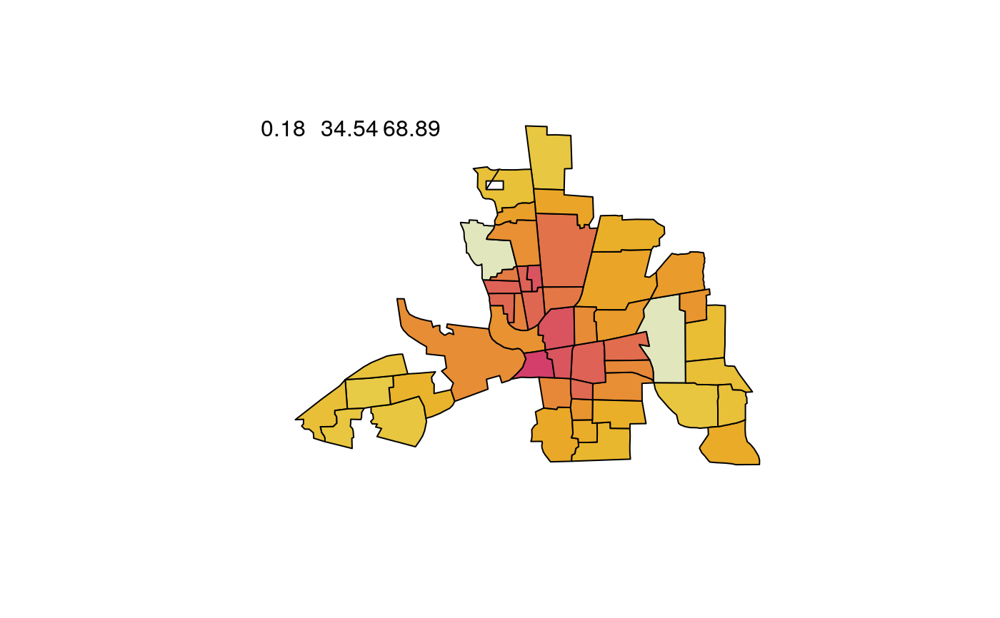
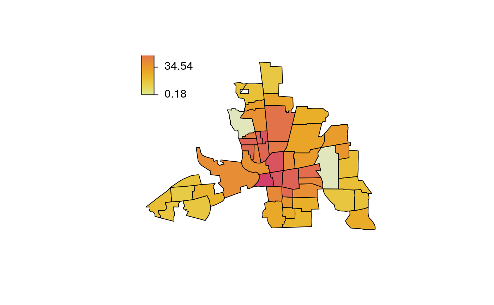
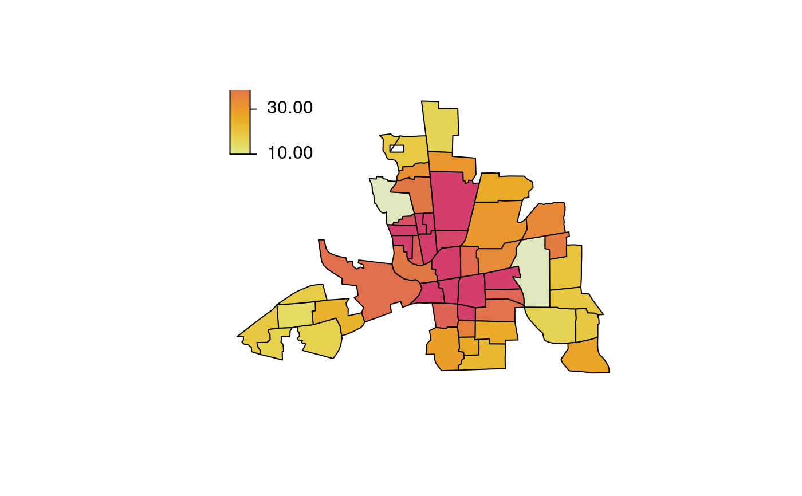

plotmap.RdThe function takes a list polygons and draws the corresponding map. Different
colors for each polygon can be used.
plotmap(map, x = NA, id = NULL, select = NULL, legend = TRUE, names = FALSE, values = FALSE, ...)
| map | The map to be plotted, usually an object that inherits from
|
|---|---|
| x | A vector, data.frame or matrix. In the latter case |
| id | If argument |
| select | Select the column of the data in |
| legend | Should a color legend be added to the plot, see also function |
| names | If set to |
| values | If set to |
| … | Arguments to be passed to |
## Example from mgcv ?mrf. ## Load Columbus Ohio crime data (see ?columbus for details and credits). data("columb", package = "mgcv") data("columb.polys", package = "mgcv") ## Plot the map. plotmap(columb.polys)## Plot aggregated data. a <- with(columb, aggregate(crime, by = list("district" = district), FUN = mean)) plotmap(columb.polys, x = a$x, id = a$district)plotmap(columb.polys, x = a$x, id = a$district, pos = "topleft") plotmap(columb.polys, x = a$x, id = a$district, pos = "topleft", side.legend = 2)plotmap(columb.polys, x = a$x, id = a$district, pos = "topleft", side.legend = 2, side.ticks = 2)plotmap(columb.polys, x = a$x, id = a$district, pos = "topleft", side.legend = 2, side.ticks = 2, col = heat_hcl, swap = TRUE) plotmap(columb.polys, x = a$x, id = a$district, pos = "topleft", side.legend = 2, side.ticks = 2, col = heat_hcl, swap = TRUE, range = c(10, 50))